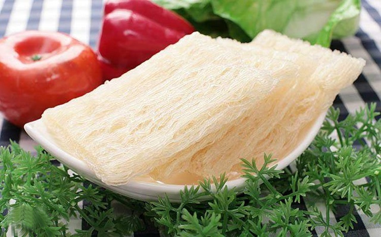
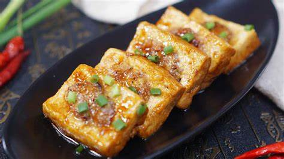
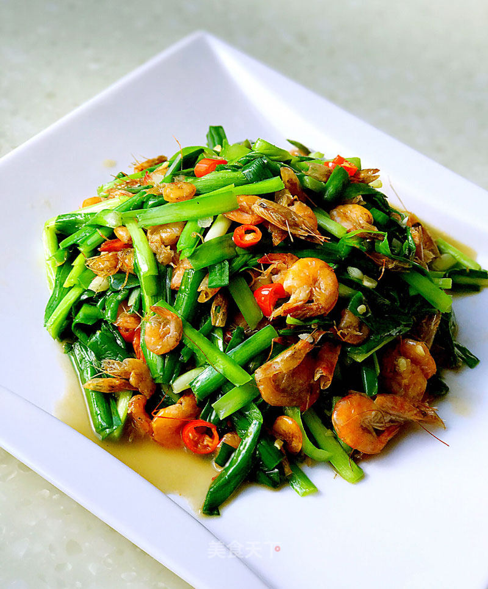
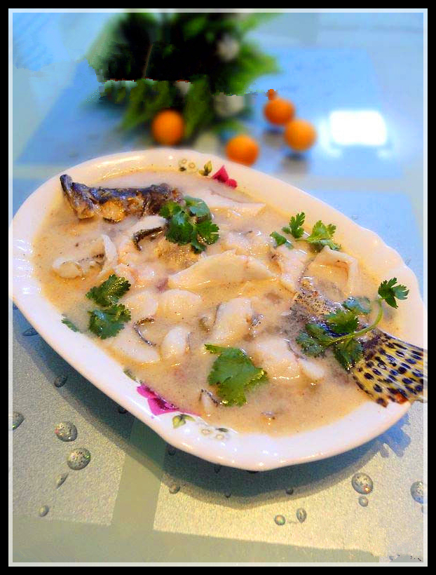
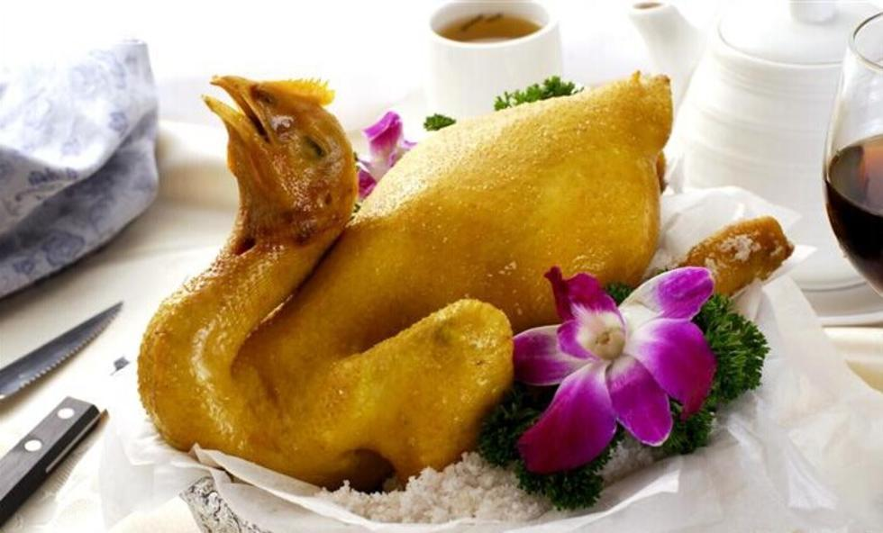
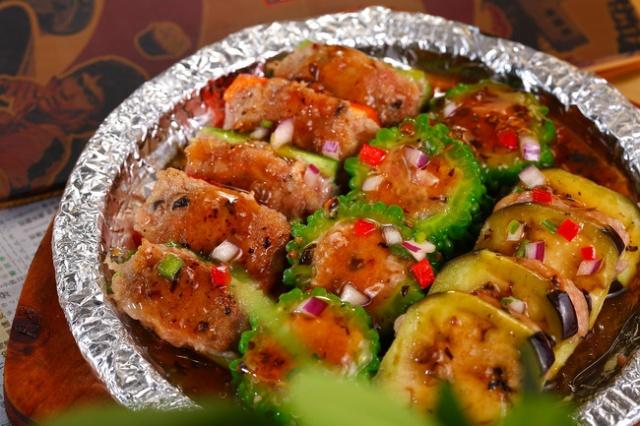
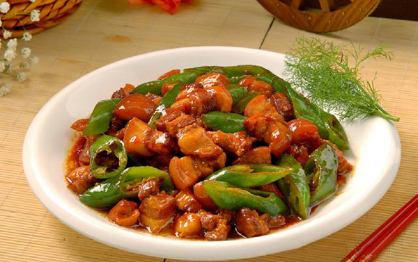
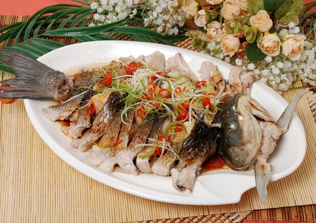
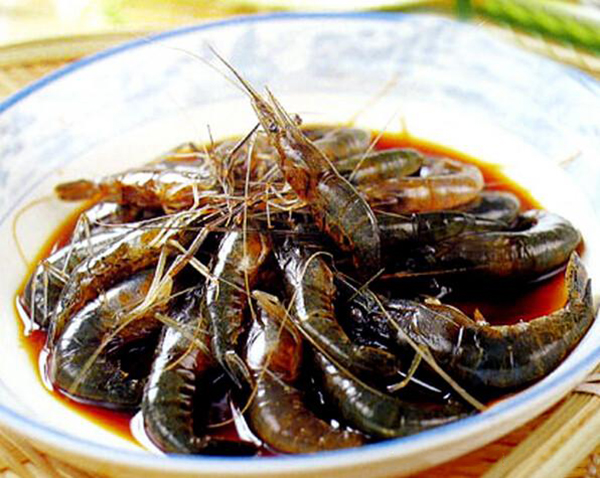
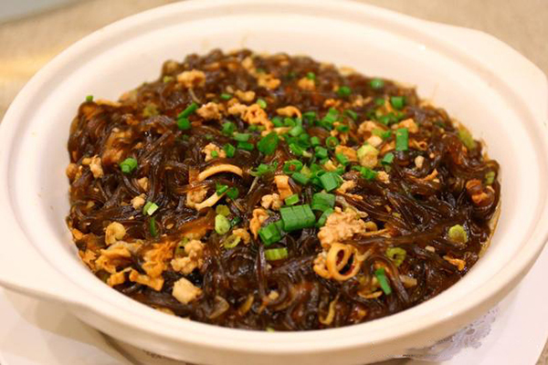

名优特产

河源客家名菜：东江酿豆腐、韭菜炒河虾、上汤桂花鱼、东江盐焗鸡、酿三宝、薯丝煲、客家酿猪红、客家菜卷、红焖猪肉、肉丸、焖香菇、炒仔鸭、全猪汤等等。河源地区的菜肴主要为客家菜，客家菜偏重“肥、咸、熟”。河源小吃有艾糍、铁勺粄、老鼠粄、发糕、糍粑、九重皮、煎堆、酥角等等。
酿豆腐

河源的酿豆腐别有一番风味，是客家菜的代表，鲜嫩滑香，营养丰富。一家煮，十家香，是客家逢年过节的保留菜式。
韭菜炒河虾

或浓郁多汁，或清淡爽口，虾营养丰富，其肉质松软，易消化，对身体虚弱以及病后需要调养的人是很好的食物；虾中含有丰富的镁，镁对心脏活动具有重要的调节作用，能很好的保护心血管系统。
上汤桂花鱼

桂花鱼又名鳜鱼，皮滑骨少，肉质鲜嫩，盛产于新丰江水库，为东江名菜。
选用万绿湖特产桂花鱼精心制作，刀工精细，鱼色乳白，口感鲜美，清甜嫩滑。
东江盐焗鸡

制法独特，味香浓郁，皮爽肉滑，以沙姜油盐佐食，风味极佳。色泽微黄，皮脆肉嫩，骨肉鲜香，风味诱人，是宴会上常用的佳肴。
客家酿三宝

酿苦瓜、酿辣椒和酿茄子集于一盘，色泽各异，形态美观，味道独特。
红炆肉

猪肉脆滑爽嫩，做得非常入味，咸甜味道适中，色泽金黄，风味独特，爽口软滑，肥而不腻。
清煲草鱼

将草鱼去鳞、宰净，切成大块放入瓦钵内，然后加入调料加盖煲。
娘酒醉河虾

娘酒、姜片放进水煲，加生猛河虾、味精，盐煲熟。娘酒醉河虾鲜甜香醇，酒香虾爽。
薯丝煲

清甜爽口，滑而不腻，口味香浓。河源连平薯丝、鸡汁、大蒜、花生油、调料等适量 。